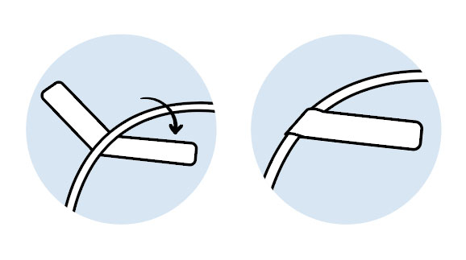

Aides
- L'utilisation du Template 'cable'
|  | Il suffit de coller le papier, centré sur le fil, et le replier sur lui-même à fin de coller les deux bandes adhésives ensemble. |
- Calcul de la dimension
- Le calcul est fait en "mm" (millimètre). Un ration de 10px pour 1mm. Alors 580px donne 58mm, soit la taille imprimable du papier 62mm (62mm moins 3mm, du à la marge, et une marge de 1mm d'ajustement, ce qui donne 58mm).
- La définition d'une hauteur ou largeur à 0px
- Vu l'usage d'un papier de type infini, la valeur 0 défini l'absence de limite, ce qui est utile dans le cas des images et des bannières.
- Limitations
- Il n'est pas possible de modifier les paramètres tel que l'alignement, ou la direction du texte. Ceci est du à des limitation actuel du support des thèmes.
Les caractères " et ' sont également non supporté correctement, veuillez plutot utiliser le caractère ` pour éviter tout problème. Le caractère ; peut aussi causer des erreurs, veuillezx le remplacer par : .
Certaines limitations seront retirés dans les prochaines versions.
- Support et Optimisation sous Windows
- Assurez-vous d'avoir le Brother b-PAC3 d'installé (version SDK ou non). Ajusté le paramètre de l'imprimante pour arrêter après l'absence de donné.
Améliorer aussi la résolution et définissez correctement le format de papier utilisé. Ceci vous évitera du gaspillage et améliora le résultat.